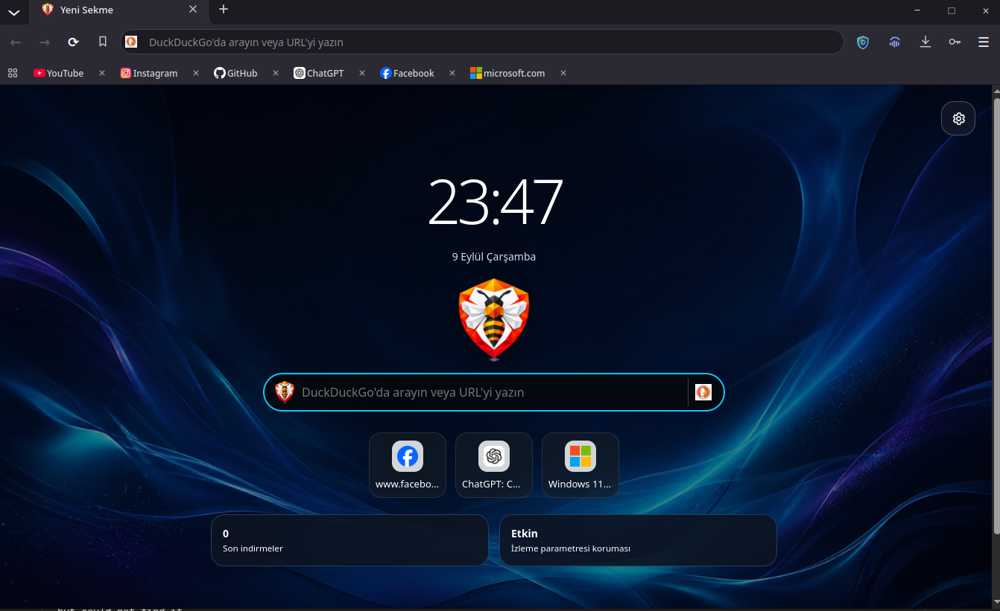
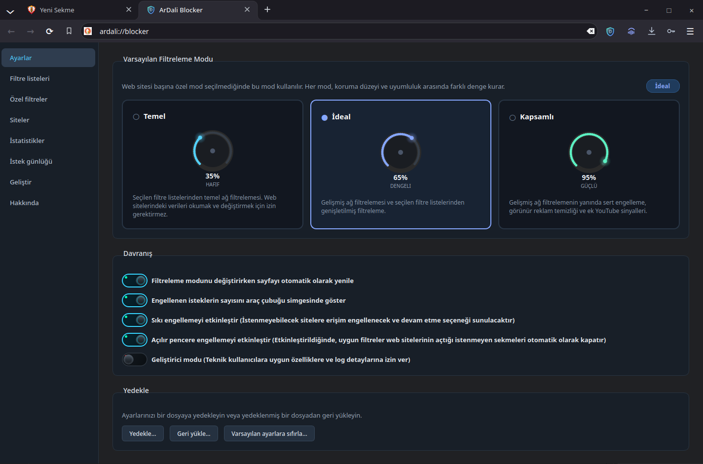
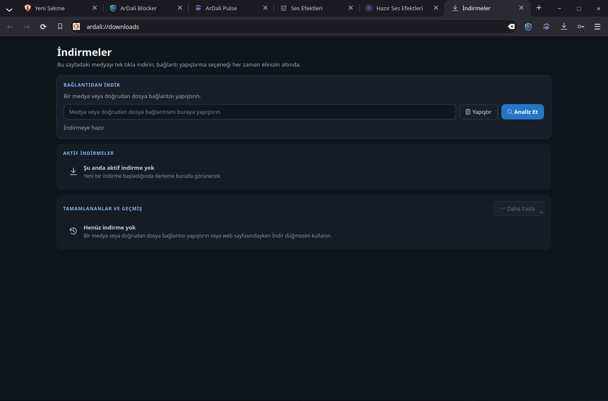
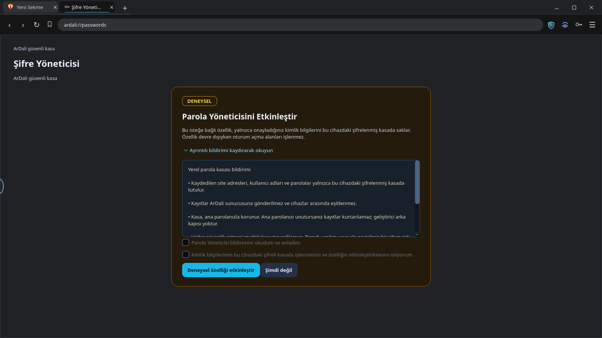
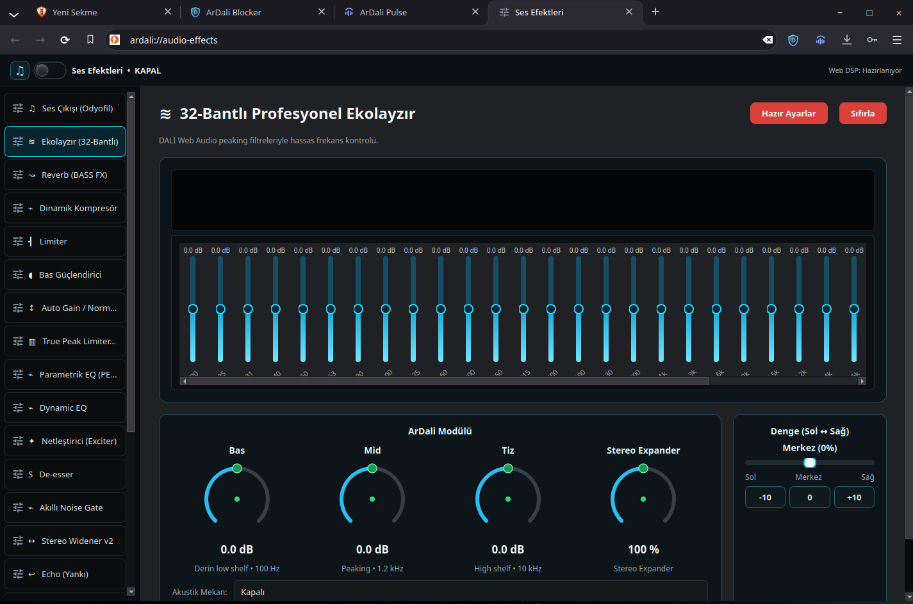

ArDali Engelleyici & Gizlilik Kalkanı
Üç kademeli koruma modu (Hafif %35, Dengeli %65, Kapsamlı %95) ile yerel filtre listeleri, kozmetik reklam gizleme, scriptlet enjeksiyonu ve takip parametresi temizleme.
ArDali Browser; modern web standartlarını, tavizsiz kişisel gizliliği, yüksek verimli paralel indirme motorunu ve entegre stüdyo ses sistemini tek bir yerde buluşturur. Electron hantallığı ve bulut takibi olmadan, saf yerel C++ ile geliştirilmiştir.

ArDali Browser'daki her özellik doğrudan yerel C++ çekirdeğinde çalışır. Düzinelerce harici tarayıcı eklentisine ihtiyaç duymadan benzersiz akıcılık ve tepki hızı sunar.
Üç kademeli koruma modu (Hafif %35, Dengeli %65, Kapsamlı %95) ile yerel filtre listeleri, kozmetik reklam gizleme, scriptlet enjeksiyonu ve takip parametresi temizleme.
GeneralDownloadManager motoru, bağlantı parçalarını 1 → 2 → 4 → 8 paralel akışa ölçeklendirir; dinamik iş paylaşımı, parça denemeleri ve anlık kaldığı yerden devam etme sağlar.
Giriş bilgilerinizi AES-256-GCM şifreleme ve PBKDF2-HMAC-SHA256 anahtar türetimiyle yerel diskinizde saklayın. Sıfır bulut aktarımı, sıfır telemetri ve güvenli form doldurma.
Site başına donanım erişimlerini adres çubuğundan anında kontrol edin: Kamera, Mikrofon, Konum, Bildirimler, Açılır Pencereler ve JavaScript optimizasyonu.
Geçmiş, yer imleri ve arama önerilerini birleştiren akıllı sıralama motoru. GPU hızlandırmalı sekme animasyonları, bellek kullanım kartları ve oturum kurtarma.
Ayarlar üzerinden tarayıcıyı yeniden başlatmaya gerek kalmadan anında dil değiştirin. Sayfa içi hızlı çeviri desteğiyle yabancı web sayfalarını tek tıkla dilinize çevirin.
Entegre odyofil ses mimarisi: 32 bant parametrik ekolayzer, BASS FX Reverb, Dinamik Kompresör, Brickwall Limiter ve 1.757 kulaklık için kalibre edilmiş frekans eğrileri.
Herhangi bir sekmede veya sistem uygulamasında çalan müziği, harici takip servislerine veri göndermeden doğrudan sistem ses boru hattından analiz edip tanımlar.
Linux ve Windows üzerinde çalışan ArDali Browser'ın gerçek arayüzlerini ve gelişmiş araçlarını inceleyin.
ArDali Engelleyici; EasyList, EasyPrivacy ve Peter Lowe gibi güvenilir filtre listelerini yerel olarak değerlendirir. Boş reklam kutularını gizler ve rahatsız edici açılır pencereleri durdurur.

Bir daha asla indirme ilerlemenizi kaybetmeyin. ArDali'nin adaptif indirme motoru, dosyaları eşzamanlı parçalara bölerek sunucu bant genişliğinden en yüksek verimi alır.

Kimlik bilgileriniz asla fiziksel diskinizin dışına çıkmaz. ArDali, şifrelerinizi PBKDF2 anahtar türetimi ve AES-256-GCM kriptografisiyle korur.

Web ortamındaki sesleri stüdyo hassasiyetinde dinleyin. ArDali, ses akışını 32 filtre üzerinden geçirir ve 1.750'den fazla kulaklık modeli için AutoEQ düzeltme eğrileri sunar.

Yazılımımızı mümkün olan en küçük saldırı yüzeyiyle tasarlıyoruz. Kanıtlanamayan reklam sloganları yerine kodla doğrulanabilir teknik taahhütler sunuyoruz.
Bu tanıtım sitesinde Google Analytics, üçüncü taraf takipçiler, çerezler veya tarayıcı parmak izi alma kodları yer almaz.
Tüm stil sayfaları, komut dosyaları, simgeler ve görseller doğrudan bu statik alandan sunulur. Harici yazı tipi veya kütüphane çağrısı yapılmaz.
ArDali'yi kullanmak, yer imlerini kaydetmek veya indirme yöneticisini çalıştırmak için oturum açmanız gerekmez.
Parolalarınız, geçmişiniz, izinleriniz ve ses profilleriniz standart XDG dizinleri ve güvenli işletim sistemi API'leri ile yerel makinenizde saklanır.
Gelişmiş HTTP başlıkları, Permissions-Policy kısıtlamaları ve no-referrer ilkeleri ile korunmaktadır.
ArDali Browser kaynak kodunun her satırı GNU Genel Kamu Lisansı v3.0 kapsamında şeffaf ve denetlenebilirdir.
ArDali Browser, GitHub üzerinde tamamen şeffaf şekilde geliştirilmektedir. Mimariyi inceleyebilir, kendi tercih ettiğiniz derleyici bayraklarıyla yerel olarak derleyebilir ve topluluğa katkı sağlayabilirsiniz.
GitHub'da Kaynak Kodu GörKullandığınız işletim sistemini seçin. Hızlı paket yöneticisi entegrasyonu ve GitHub üzerinde bağımsız sürüm paketleri sunulmaktadır.
yay -S ardali-bin
yay -S ardali
Sürümler doğrudan GitHub Releases üzerinde barındırılır
Taşınabilir zip paketleri ve kurulum dosyaları her kararlı sürüm etiketiyle birlikte yayınlanır.
Sürümler doğrudan GitHub Releases üzerinde barındırılır